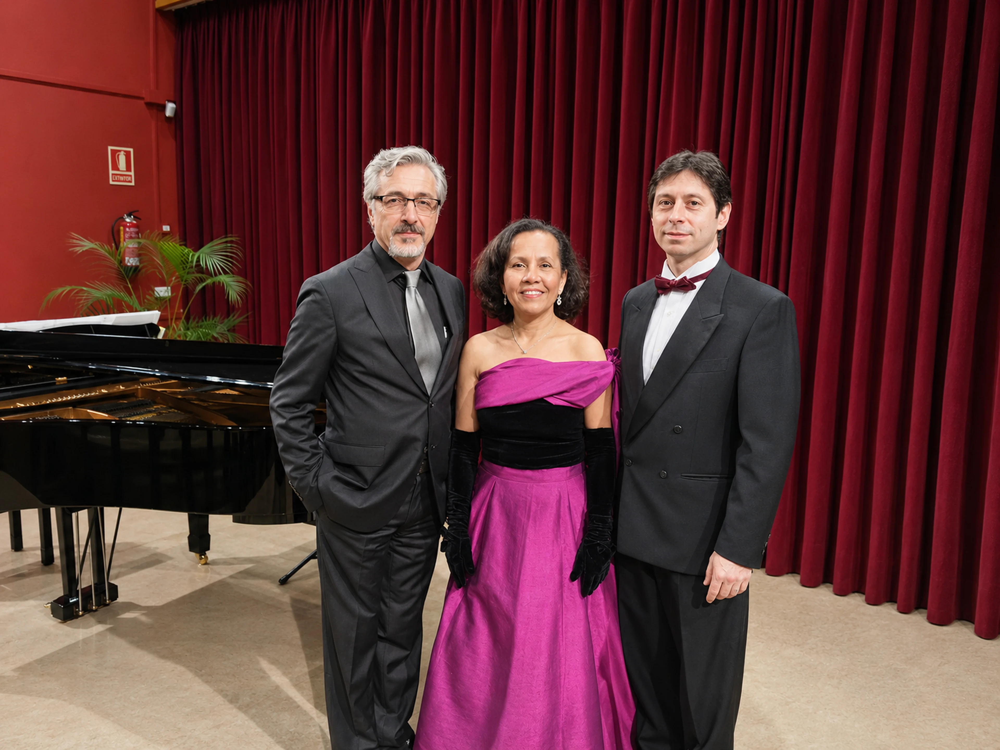
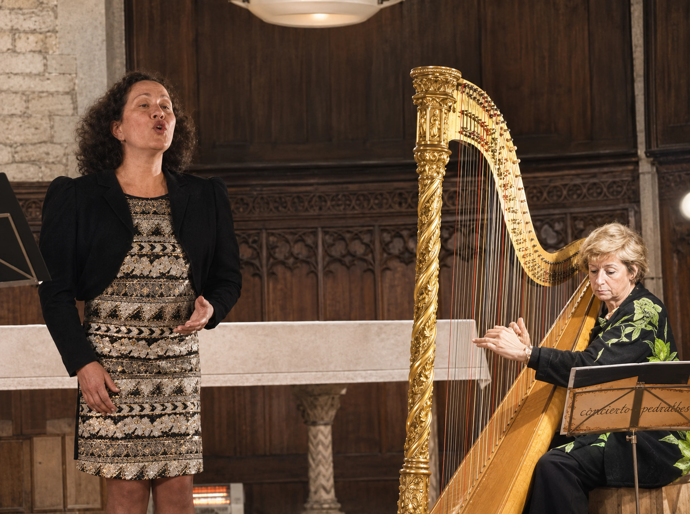

Educació, Bioanàlisi i Biologia
Llicenciada en Educació i en Bioanàlisi, biòloga i investigadora clínica.
Carmen Moreno Muñoz
Soprano lírica lleugera, bioanalista, biòloga, mestra de tècnica vocal i directora de coral. Trenta anys dedicats al treball vocal, al so cantat; una motivació que va sorgir d’una pregunta: com es produeix un so lliure?
«Què he de fer per convertir-me en una bona professora de cant?»La seva pregunta el primer dia de conservatori. «Encara espero la resposta»
Qui és
Carmen Moreno va néixer a Cumaná, a la costa oriental de Veneçuela. Abans de ser mestra de cant és llicenciada en Educació, llicenciada en Bioanàlisi i biòloga. Va treballar en recerca científica i va signar publicacions científiques.
Aquell perfil analític i clínic no l’ha abandonada mai. Durant els seus estudis de cant líric amb els seus mestres, Lina i Humberto Diez, no en tenia prou de produir o imitar un so: volia comprendre quins músculs participaven en la seva producció, en quin punt del rostre es definia la seva ubicació i quins moviments del rostre li permetien produir un so lliure i brillant i, en altres casos, per què sortia estret o estrident.
El 1993, a Barcelona, va aparèixer en el seu camí «el seu mestre», que li va ensenyar la relació muscular del rostre amb la producció del so, així com la respiració abdominal. Va assolir la comprensió de la tècnica vocal i va compartir amb el seu mestre els millors moments de la seva vida musical. El 1995 comença a impartir classes de tècnica vocal a professionals, intèrprets i aficionats al cant. El 2012 publica el seu llibre Mi técnica vocal paso a paso, motivada i recolzada pel seu mestre, Ángel Miseri, i per la mestra Sara Svat.
Formació
Abans d’ensenyar a cantar, la Carmen havia estudiat anatomia i fisiologia humanes en una facultat de Medicina, i s’havia format en didàctica de l’ensenyament. Aquesta doble formació és la base del seu mètode d’ensenyament.
Llicenciada en Educació i en Bioanàlisi, biòloga i investigadora clínica.
La formació oficial per a la docència, que completa la seva llicenciatura en Educació.
Conservatorio Nacional de Música Juan José Landaeta, Conservatori del Liceu i Conservatori Professional de Música de Badalona.
Estudia Musicologia, menció Interpretació, a la International Valencian University.
Tres vocacions, una mateixa veu
Ha cantat a L’Auditori de Barcelona, al Monestir de Pedralbes, al Recinte Modernista de Sant Pau, al teatre cultural de Badalona, a la sala cultural de Saint-Génis-des-Fontaines (França) i a la cripta de la Sagrada Família.
Ha estat docent a la Facultat de Medicina i analista clínica, i actualment treballa a la Policlínica de Terrassa. La seva formació com a bioanalista i docent li va facilitar comprendre i explicar la tècnica vocal amb precisió anatòmica: la implicació de la musculatura abdominal, dels músculs pterigoïdals, de l’elevador del llavi superior, dels zigomàtics, del quadrat del mentó, etc., en els moviments de col·locació i sosteniment del so.
Des de 1995 ensenya tècnica vocal i ofereix a cada persona interessada a aprendre o millorar, sigui professional, solista o coralista, el mateix ensenyament. L’objectiu és que l’alumne assoleixi tal comprensió tècnica que s’independitzi del seu ensenyament i esdevingui un gran col·lega de l’art de cantar.
La Carmen, en acció


No sóc la millor soprano del món, sóc una soprano del món que gaudeix molt de la seva feina.Carmen Moreno · 2008


La seva rutina, en paraules seves
El 2008 la Carmen va resumir al seu blog com estudia cada peça. És el mateix ordre que proposa als seus alumnes:
Trajectòria
Una selecció de fites documentades per la mateixa Carmen. Filtra per faceta per recórrer la seva docència, els seus concerts, les seves corals o la seva tasca com a jurat.
Classes presencials a professionals, estudiants i intèrprets aficionats: l’inici del mètode.
Comença la seva tasca en la direcció coral, que la portarà a dirigir la Coral Esperit Cantaire i la Coral Nova de Cornellà.
Lope de Aguirre, traidor, de José Sanchis Sinisterra, amb direcció escènica de Karel Mena, i Animalmusic, coproducció del Festival Grec de Barcelona i La Korbata.
Direcció musical de l’espectacle dirigit per Alejandra Egido a la Sala Pati Llimona i La Farinera del Clot. Entre les seves direccions musicals hi ha també Cançó d’amor i de guerra, de Martínez Valls.
Interpreta la «Cantilena» de les Bachianas Brasileiras núm. 5 de Villa-Lobos, una de les seves àries preferides.
International Golden Nightingale Choir Festival, a Carmarthen (Gal·les). Des d’aleshores no ha deixat de participar en festivals corals.
Convidada per la Fundació Dafne, la coral actua a l’auditori del Palau de Congressos d’Oviedo i a la Casa de Cultura de Grado.
A la Sala Mas de Barcelona: García Abril, la cançó a la lluna de Rusalka de Dvořák i la Reina de la Nit de Mozart.
Jurat a l’International Krakow Choir Festival i gira de la Coral Nova de Cornellà per Galícia.
Cicle de concerts amb Carmina Burana d’Orff. La coral ha cantat a Itàlia, Polònia, Àustria, el Vaticà i Andorra. Aquell any, la Carmen és jurat a Cracòvia i al 3rd International Youth Music Festival de Bratislava.
Presentació el dia de Sant Jordi a la Rambla de Catalunya, amb la seva editora. El llibre inclou un DVD en 3D. Aquell estiu torna a Cracòvia com a jurat.
Primera conferència, «El cant i la seva tècnica vocal, el solista i el cor», a l’Aula d’Extensió Universitària. Publica dos articles a la revista ArtsEduca i és jurat al IV Krakow Choir Festival.
Funda el seu grup de cambra femení, que debuta el 30 de novembre a Sant Pau del Camp. És jurat al X Varsovia Cantat i fa una conferència a la Biblioteca Clarà.
L’International Choral Bulletin de la IFCM publica el seu article sobre la vocalització del cor abans de cantar. És jurat del Festival Internacional de Música de Cantonigròs, a Vic.
Organitza el 1r Festival Internacional d’Intèrprets de Música Llatinoamericana, amb Cantoría Re-Quinto, i torna a Varsòvia com a jurat.
Recital íntim al Monestir de Pedralbes amb l’arpista Mercè Guilera, concert a la Sala Modernista del Recinte de Sant Pau i homenatge al pianista Francesc Busquets.
Cantoría Re-Quinto prepara l’Oratorio de Noël de Saint-Saëns a la cripta de la Sagrada Família, amb un assaig obert solidari. Jurat al Varsovia Cantat.
Festival internacional de música coral sacra que la Carmen recorda com «el millor festival en què he participat».
Entre 2020 i 2022 imparteix set cursos en línia setmanals «amb molt bons resultats». Allà neix la idea de la seva escola en línia.
Completa la sèrie de set classes de Mi técnica vocal paso a paso, amb un resum senzill del seu treball de recerca.
Cantoría Re-Quinto canta a la basílica i a la cripta de la Sagrada Família, amb el Psalmus 6 d’Hernando Franco (Mèxic, 1611) com a gran repte. Al novembre, jurat al 16th International Warsaw Choir Festival.
Concert a l’aire lliure amb obres tradicionals de Puerto Rico, l’Equador, Veneçuela i Surinam, i barroc de Mèxic, el Perú, l’Equador i Guatemala, cantat en nàhuatl i quítxua.
El seu web Mi técnica vocal paso a paso es renova per incorporar una escola de cant en línia.
Gratitud
La Carmen no parla mai del seu mètode sense anomenar els qui la van formar.
Agraeix els ensenyaments de Lucía Guitliz, Lina Brando, Humberto Diez i Eliseo Fernández. I reserva la seva «més profunda devoció i eterna gratitud» per a Ángel Miseri i Sara Svat, per tot el que li van aportar sobre la tècnica vocal i per despertar la seva vocació d’ensenyar-la.
Publicacions
A més del seu llibre, la Carmen ha escrit sobre tècnica vocal i direcció coral en revistes especialitzades.
International Choral Bulletin, vol. XXXIV, núm. 2, al dossier sobre escalfament i refredament vocal. Publicació de la Federació Internacional per a la Música Coral. Llegeix l’edició en castellà
Revista ArtsEduca, núm. 9, pàg. 30–37 (en castellà).
Revista ArtsEduca, núm. 4, pàg. 90–93 (en castellà). Llegeix-ne un resum
Revista ArtsEduca, núm. 4, pàg. 38–40 (en castellà).
El seu mètode complet, amb DVD en 3D. Coneix el llibre

La teva primera classe
Explica’m el teu objectiu, projecte o intenció amb el cant; acordem una línia de treball vocal i seleccionem l’horari convenient, en línia o presencial, aquí, a Barcelona.